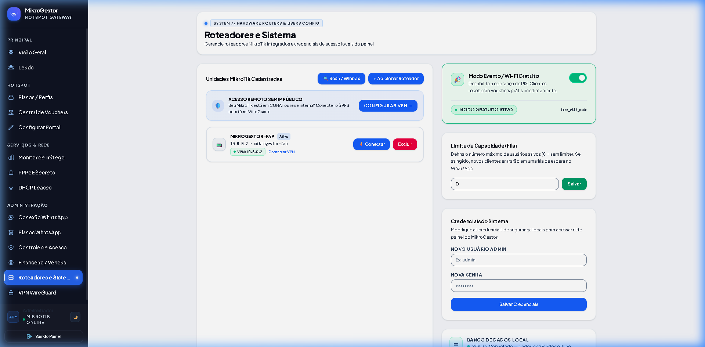
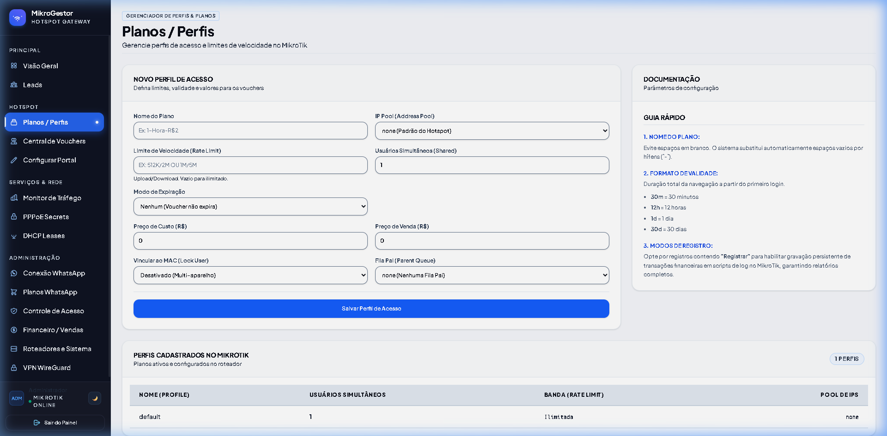
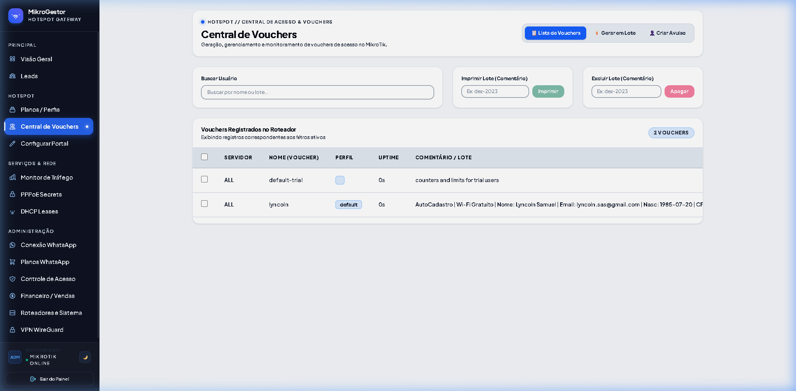
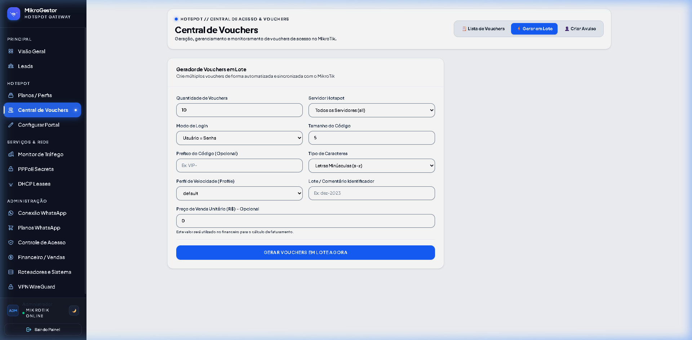
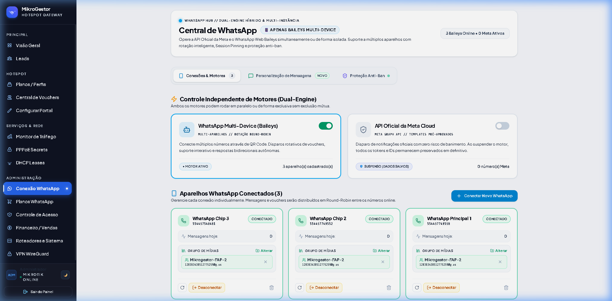
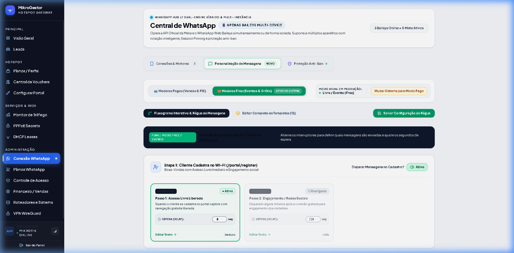
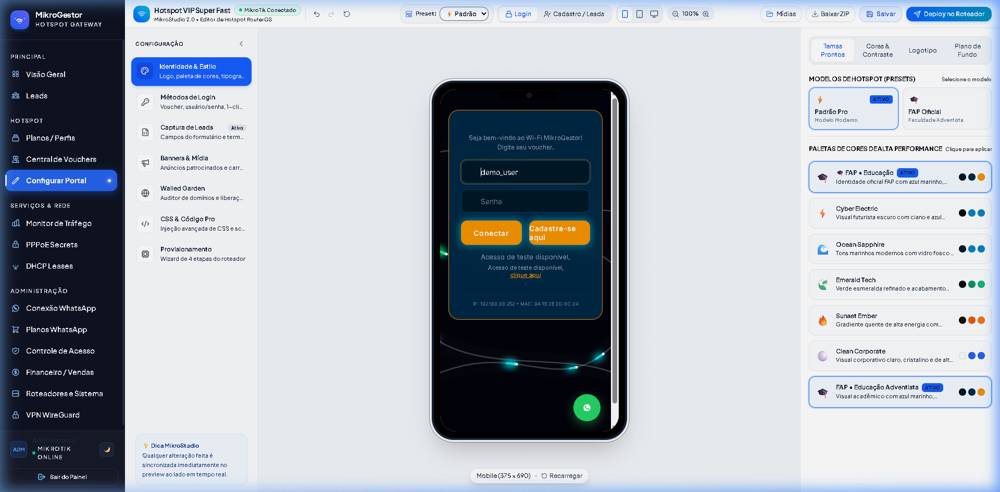
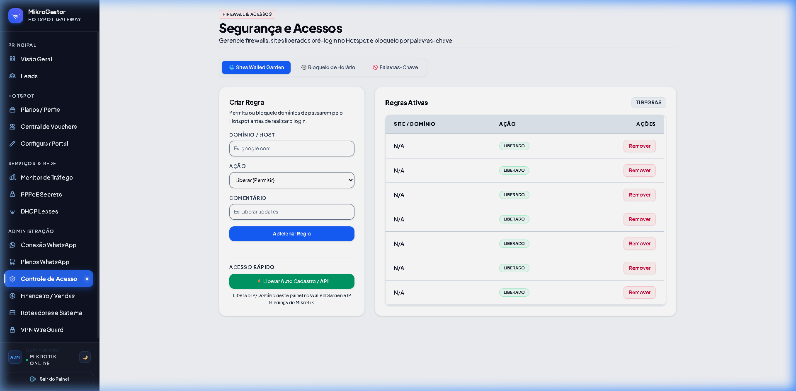

Bíblia Visual do MikroGestor:
Como Funciona, Por Que Existe e Para Que Serve
Este portal visual explica com detalhes cirúrgicos cada tela, rotina de segurança, arquitetura de rede MikroTik RouterOS v7 e regras comerciais. Clique sobre qualquer captura de tela para ampliá-la em alta resolução.
Tecnologia Hotspot
RouterOS v7.x
Mensageria
Multi-Chip 2 a 8
Gateway
PIX Automático
Túnel Remoto
WireGuard 10.8.0.0/24
Dashboard Executivo & Telemetria
Visão unificada de faturamento, tráfego e usuários conectados

💡 O que é?
A tela inicial que consolida os KPIs vitais da sua operação de internet em tempo real: faturamento do dia/mês, roteadores online, usuários ativos no hotspot e estado do pool de WhatsApp.
🎯 Para que serve?
Para tomar decisões instantâneas. Permite saber se algum roteador caiu, qual plano está vendendo mais, se os pagamentos PIX estão entrando e se os chips WhatsApp estão saudáveis.
⚖️ Por que existe?
Sem um painel centralizado, o provedor precisaria abrir o Winbox de cada MikroTik individualmente e conferir extratos bancários na mão, tornando a operação inviável acima de 2 roteadores.
Como Funciona na Prática:
Coleta Assíncrona
O servidor consulta os MikroTiks via API Socket RouterOS e agrega o número de clientes ativos em segundos.
Totalizadores Financeiros
Cada pagamento PIX confirmado pelo webhook do gateway é somado instantaneamente nos gráficos de receita.
Roteadores MikroTik & Provisionamento
Scripts de auto-configuração, certificados SSL e RouterOS v7

💡 O que é?
O catálogo de todos os MikroTiks vinculados ao sistema, com IP de controle, estado de conexão, modelo de placa (RB750, hEX, CCR) e status de provisionamento.
🎯 Para que serve?
Permite gerar em 1 clique o script .rsc que configura automaticamente no MikroTik: Hotspot, Walled Garden restrito, Mangle Anti-Tethering e WireGuard.
⚖️ Por que existe?
Configurar RouterOS na mão tem dezenas de armadilhas (erros de sintaxe em v7, quebras de linha Windows, regras de firewall faltando). O script automatizado elimina 100% dos erros humanos.
⚠️ Regra Crítica de Engenharia (RouterOS v7):
O MikroGestor aplica em tempo de execução um patch no driver Socket do RouterOS: tabelas vazias no RouterOS v7 retornavam a exceção RosException: Tried to process unknown reply: !empty. Nosso backend intercepta essa resposta e transforma em array vazio, mantendo a estabilidade contínua sem travar o painel.
Hotspot & Planos de Acesso
Definição de tempos, limites de banda e preços para venda

💡 O que é?
A esteira de produtos que o cliente final enxerga na tela de compra do celular. Ex: 1 Hora (R$ 3,00), 24 Horas (R$ 10,00), 7 Dias (R$ 30,00).
🎯 Para que serve?
Para controlar a velocidade (ex: 5 Mbps download / 2 Mbps upload), tempo de validade (uptime) e se o plano pode ser pago com PIX instantâneo ou ativado por voucher impresso.
⚖️ Por que existe?
Garante que a banda do link do provedor não seja esgotada por um único usuário e viabiliza a monetização fracionada em praças, feiras, hotéis, praias e condomínios.
Vouchers & Emissão em Lote
Impressão térmica de cartões, pontos de venda físicos e lotes promocionais


💡 O que é?
Códigos alfanuméricos únicos (ex: HOT-9X82F) que conferem direito de conexão pelo período contratado.
🎯 Para que serve?
Permite vender acesso à internet em balcões de comércio (padarias, bares, portarias de camping) para quem não tem celular com chave PIX ou prefere pagar em dinheiro vivo.
⚖️ Por que existe?
Atende à demanda de dinheiro em espécie e parcerias com revendedores locais que recebem comissão por cada lote de raspadinhas ou tíquetes vendidos.
WhatsApp Multi-Chip & Hub de Mensageria
Pool de 2 a 8 números, Auto-Inclusão em Grupo e Encaminhamento Humano



💡 O que é?
Sistema autônomo que conecta de 2 a 8 números WhatsApp simultâneos via Baileys com persistência total em banco SQLite (sem arquivos soltos em disco).
🎯 Para que serve?
Envia comprovantes PIX, vouchers, lembretes de expiração e campanhas de marketing com fotos/áudios sem risco de bloqueio, rodando em revezamento circular (Round-Robin).
⚖️ Por que existe?
Se você enviar centenas de mensagens por um único chip, a Meta bloqueia o número em menos de 48 horas. Com o pool inteligente e encaminhamento nativo (relayMessage), o envio simula 100% um ser humano.
🚀 Engenharia de Auto-Inclusão Autônoma no Grupo
O administrador cria apenas um único grupo no WhatsApp (Grupo Biblioteca) e define seu JID nas configurações. Sempre que um chip novo conecta o QR Code:
groupInviteCode com delay de segurança de 3 segundos.
groupAcceptInvite (com retry de até 3x) e sincroniza todas as mídias da Meta sem novo upload!
Portal do Cliente & Captive Portal
A experiência do usuário ao conectar na rede Wi-Fi

💡 O que é?
A página de login e cadastro exibida automaticamente pelo celular (Android/iOS/Windows) ao tocar no nome do Wi-Fi.
🎯 Para que serve?
Permite ao cliente escolher entre cadastrar-se para teste gratuito de 15 minutos, comprar um plano com PIX ou inserir o código de um voucher.
⚖️ Por que existe?
É a ponte de conversão entre um usuário anônimo e um cliente pagante, coletando dados legais exigidos pelo Marco Civil da Internet (Lei 12.965/2014).
Financeiro & Automação PIX
Auditoria de receitas, confirmação por webhook e liberação sem intervenção

💡 O que é?
Extrato detalhado de cada transação gerada, com ID do pedido, cliente, valor, status (Pendente / Aprovado) e roteador emissor.
🎯 Para que serve?
Conciliação bancária completa. Permite auditar quanto cada torre ou estabelecimento faturou e disparar estornos quando necessário.
⚖️ Por que existe?
A automação PIX elimina intermediários manuais. O cliente paga às 03:00 da manhã de um domingo e a internet libera em 2 segundos sem nenhum funcionário trabalhando.
VPN WireGuard & Acesso Remoto Winbox
Túnel criptografado sem necessidade de IP público nos clientes

💡 O que é?
A infraestrutura de túneis seguros baseada em WireGuard (subnet 10.8.0.0/24) que conecta a VPS aos MikroTiks e aos técnicos.
🎯 Para que serve?
Permite ao técnico abrir o Winbox de qualquer lugar do mundo e conectar diretamente no IP VPN do MikroTik (ex: 10.8.0.2:8291) sem precisar de AnyDesk ou IP Fixo.
⚖️ Por que existe?
99% dos clientes e estabelecimentos possuem conexão via CGNAT (sem IP público). O WireGuard fura qualquer barreira de provedor com consumo mínimo de CPU e máxima segurança criptográfica.
Segurança, Anti-Tethering & Blindagem Jurídica
Bloqueio de inadimplentes em 15 min, TTL Mangle e termos LGPD/Marco Civil


💡 Anti-Tethering (TTL=1)
Regra no MikroTik (action=change-ttl new-ttl=set:1). Quando o celular tenta rotear Wi-Fi para o vizinho, o pacote expira (TTL 0) e é descartado, impedindo compartilhamento clandestino.
🎯 Anti-Burla de MAC Aleatório
Mesmo se o cliente trocar o MAC Address no smartphone, nosso backend bloqueia pelo CPF e Telefone informados. A cortesia de 15 minutos é concedida estritamente uma única vez por CPF.
⚖️ Termos Legais Protegidos
Termo Gratuito cita Art. 7°/18 da LGPD e Marco Civil. Termo Pago ressalta que o PIX é executado no ambiente protegido do banco do cliente (CDC Art. 30/31 e Código Civil Art. 393).
FAQ — Perguntas Frequentes & Diagnóstico Rápido
Soluções imediatas para os cenários do dia a dia
O que fazer se o chip 3 ou 4 do WhatsApp não entrar no grupo automaticamente? ▼
O sistema já possui auto-retry de 3 tentativas com delay de 3 segundos. Se ainda assim não entrar, verifique se o bot administrador do grupo possui permissão de adicionar participantes ou se o link de convite do grupo foi revogado no app do WhatsApp.
Por que o Walled Garden não pode liberar o Mercado Pago ou WhatsApp diretamente? ▼
Liberar domínios externos no Walled Garden cria uma brecha gigantesca onde usuários utilizam túneis de proxy/DNS para navegar de graça sem pagar. O MikroGestor resolve isso concedendo 15 minutos de internet livre no cadastro para o cliente pagar no próprio app bancário.
O que acontece se o cliente desligar o Wi-Fi e ligar de novo para burlar os 15 minutos? ▼
O sistema registra o MAC no MikroTik em /ip hotspot ip-binding type=blocked e valida no banco o CPF e telefone. Ao tentar conectar novamente, ele recebe HTTP 403 e a tela de login exige pagamento ou bloqueia a navegação.